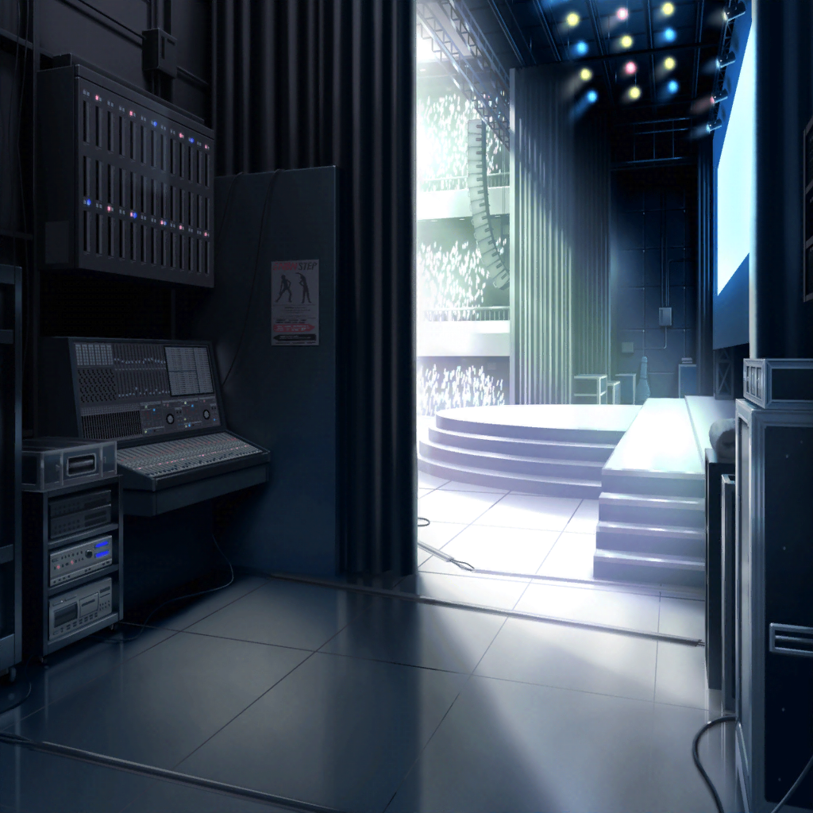
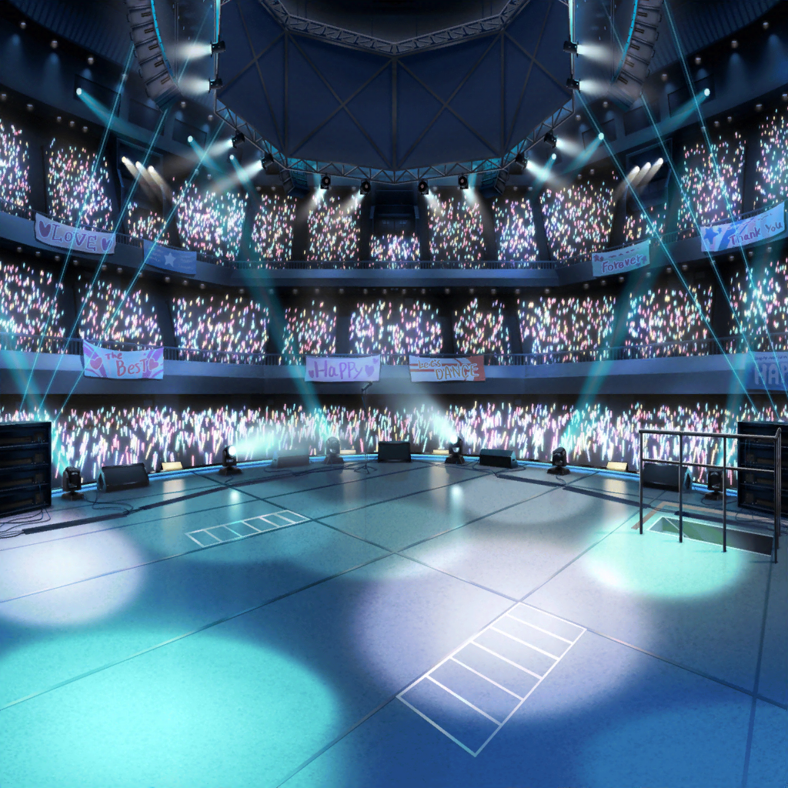

SMS8 会場 袖
リサ
もうそろそろアタシ達の出番……っ！
うう、さすがに緊張してきた……
紗夜
会場のざわめきがここまで聞こえてきますね
あこ
お客さん、すっごいたくさん……！
ドキドキするよ〜！
友希那
落ち着いて。これまで練習してきたものをすべて出すまでよ
燐子
は……はいっ……！
スタッフ
では、こちらにスタンバイお願いします！
Roselia
はい！

観客A
お、Roseliaじゃん！
観客B
へー、知ってるの？
観客A
前に小さいとこでやってるのを見たことあるんだよねー。
高校生だけどけっこういい音してるんだよ！
友希那
Roseliaです
あこ
１，２，３！
あこ
（わあ……っ！ お客さん、ノッてきてる！
あこ達のカッコイイところ、みんな見て〜！）
紗夜
（ひっかかりがちだった箇所もそれなりにまとまったわね。
この演奏ならば……！）
観客A
うーん……
観客B
まあ、『演奏は』うまいね……
観客C
ジュニア枠ってあと何バンド出るんだっけ？
今のうちにお手洗いっとこうかなー
観客D
あ、私も！ あと、何か食べときたいかもー
リサ
（えっ、ちょっと何……！？）
燐子
（お客さんが……）
紗夜
（離れていく……）
友希那
――♪

ライブ後
楽屋
友希那
……
紗夜
……悪くない演奏だったと思います
燐子
……
あこ
どうしてお客さんがどんどんいなくなっちゃったんですか？
あこ、何回も間違えてたところも、今日はちゃんとできました。
なのに……
運営スタッフ
Roseliaさん、お疲れ様でした
リサ
あっ……！ お疲れ様でした！
運営スタッフ
すみません、緊張してましたか？
以前聴いた時と印象が違ったような……
リサ
あ、あはは〜！ すみません、緊張しちゃってたかも
しれません……
友希那
……
運営スタッフ
ま、まあ高校生ですからね。まだまだこれからですよ。
よければ、このあとの演奏も自由に聴いていってください。
それじゃ、今日はありがとうございました。お疲れ様でした
Roselia
……
リサ
このあと……どうする？
友希那
今日はここで解散にしましょう
紗夜
反省会はどうしますか？
友希那
別の日にしましょう。
今はあまり冷静に振り返れるとは思えないわ
友希那
……それじゃあ、私はここで
燐子
あっ……友希那さん……！
あこ
……